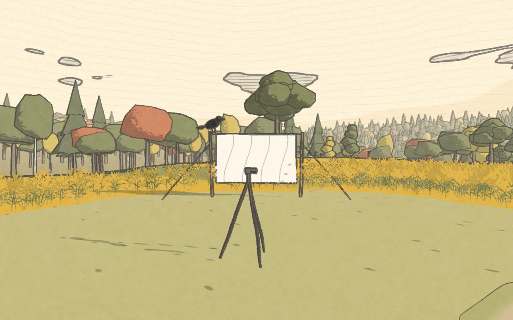

stop 1 of 8morning
films
A documentary about our first year out here. Episode 1 starts at the very beginning, when we first stepped onto the land.
newest · episode 4 · november 2026 · hunting for a lost well.
inside an app? youtube and etsy work better in your own browser. tap the ⋯ menu, then "open in browser".